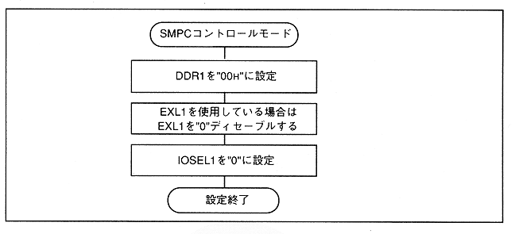

The parallel I / O register at power-on is set to the default value shown in Table 3.1.
Table 3.1 Parallel I / O register default value at power ON
Register name | Set value | |
IOSEL1 / 2 | 0H | SMPC control mode |
EXL1 / 2 | 0H | PAD interrupt, VDP2 external latch disabled |
DDR1 / 2 | 00H | All-bit input |